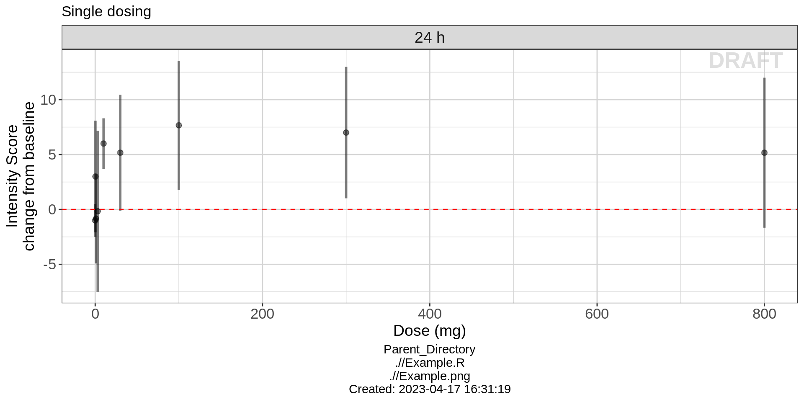

PD - Multiple Ascending Dose - Realistic Data
Overview
This document contains PD exploratory graphs and also the R code that generates these graphs. The plots presented here are inspired by a real study which involved multiple types of PD data, from continuous endpoints to ordinal response and count data.
This code makes use of the following files which can be downloaded from the available links
Data specifications can be accessed on Datasets and Rmarkdown template to generate this page can be found on Rmarkdown-Template.
Setup
# remove reference to home directory in libPaths
.libPaths(grep("home", .libPaths(), value=TRUE, invert=TRUE))
.libPaths(grep("usr", .libPaths(), value=TRUE, invert=TRUE))
# add localLib to libPaths for locally installed packages
.libPaths(c("localLib", .libPaths()))
# will load from first filepath first, then look in .libPaths for more packages not in first path
# version matches package in first filepath, in the case of multiple instances of a package
# library(rmarkdown)
library(gridExtra)
library(grid)
library(ggplot2)
library(dplyr)
library(RxODE)
library(caTools)
theme_set(theme_bw(base_size=12))Loading dataset
data_all<- read.csv(file="../Data/mt12345.csv", header=T)
##Remove data from Part 3 and placebo
data_all<-data_all[data_all$ID<1109|data_all$ID>1117,]
##Remove negative times
data_all<-data_all[data_all$NTIM>=0,]
##Remove duplicates
data_all<-data_all[!duplicated(data_all),]
##Find multiple_dosing IDs
IDs<-unique(data_all$ID)
multiple_dosing_IDs<-NULL
single_dosing_IDs<-NULL
k<-0
l<-0
for (i in IDs){
if (length(which(data_all$EVID[data_all$ID==i]==1))>1){
k<-k+1
multiple_dosing_IDs[k]<-i
}else{l<-l+1
single_dosing_IDs[l]<-i}
}
##Take info for generating the dosing times
data_dosing<-NULL
data_dosing$ID<-data_all$ID[data_all$EVID==1&data_all$RNDDOSE!=0]
data_dosing$NTIM<-data_all$NTIM[data_all$EVID==1&data_all$RNDDOSE!=0]
data_dosing$DV<-12000
data_dosing$DOSE<-data_all$DOSE[data_all$EVID==1&data_all$RNDDOSE!=0]
data_dosing<-as.data.frame(data_dosing)
data_all$DAY = data_all$NTIM/24Intensity Score (a Composite Score)
Intensity Score is a composite score ranging from 0 to 28, coming from the sum of 7 categories each with possible values from 0 to 4. The hypothesis for drug ABC123 is that it will have a positive relationship with Intensity Score. If the drug is working, higher doses should result in higher Intensity Score.
Processing Data
data_to_plot <- data_all
##Define and name the compartment
cmt_number<-13
cmt_name<-"Intensity Score"
units<-''
##create column with change from baseline
data_to_plot$LIDV2<-data_to_plot$LIDV
for (i in 1:nrow(data_to_plot)){
if (data_to_plot$CMT[i]==13){
data_to_plot$LIDV2[i]<-data_to_plot$LIDV2[i]-
(data_to_plot$LIDV[data_to_plot$ID==data_to_plot$ID[i]&data_to_plot$NTIM==0&data_to_plot$CMT==13])}
}
##Find multiple_dosing IDs
data_to_plot_single_dosing<-data_to_plot
data_to_plot_multiple_dosing<-data_to_plot
for (i in 1:k){data_to_plot_single_dosing <-data_to_plot_single_dosing[data_to_plot_single_dosing$ID!=multiple_dosing_IDs[i],]}
for (i in 1:l){data_to_plot_multiple_dosing<-data_to_plot_multiple_dosing[data_to_plot_multiple_dosing$ID!= single_dosing_IDs[i],]}
##Take info for generating the dosing times
data_dosing_single_dosing<-data_dosing
data_dosing_multiple_dosing<-data_dosing
for (i in 1:k){data_dosing_single_dosing<-data_dosing_single_dosing[data_dosing_single_dosing$ID!=multiple_dosing_IDs[i],]}
for (i in 1:l){data_dosing_multiple_dosing<-data_dosing_multiple_dosing[data_dosing_multiple_dosing$ID!=single_dosing_IDs[i],]}
data_to_plot <- data_to_plot [data_to_plot$CENS==0&data_to_plot$CMT==cmt_number,]
data_to_plot_single_dosing <- data_to_plot_single_dosing [data_to_plot_single_dosing$CENS==0&data_to_plot_single_dosing$CMT==cmt_number,]
data_to_plot_multiple_dosing<- data_to_plot_multiple_dosing[data_to_plot_multiple_dosing$CENS==0&data_to_plot_multiple_dosing$CMT==cmt_number,]
##remove dose=100mg as there is only zero time for that.
data_to_plot_multiple_dosing<-data_to_plot_multiple_dosing[data_to_plot_multiple_dosing$DOSE!=100,]Response over Time
Intensity Score over Time, Faceting by Dose
Lets get an overview of the change from baseline intensity score over time following multiple dosing. Plotting boxplots of the Change from Baseline Intensity score over time, grouped by different treatments, we can begin to see the behavior of the drug over time and by treatment. Looking at the Placebo and 30 mg dose groups, the change from baseline intensity score does not appear to be different from zero on days 7 or 14. However, with the 30 mg and 50 mg treatment groups, change from baseline intensity score is clearly greater than zero for days 7 and 14. Drug ABC123 appears to start working for 30 mg doses and higher.
labelFun <- function(variable,value){
paste0(value," mg")
}
ytitle<-ylab(paste0(cmt_name," ",units,"\n change from baseline"))
xtitle<-xlab("Time (days)")
plot2<-ggplot(data_to_plot_multiple_dosing, aes(y=LIDV2, x= DAY, group=NTIM)) +
geom_boxplot(width = 5)+
ggtitle("Multiple dosing")+
theme_bw() +
ytitle+
xtitle+
geom_hline(yintercept=0,color="red",linetype="dashed")+
scale_x_continuous(breaks = c(-1,7,14))+
theme(axis.text=element_text(size=13),axis.title=element_text(size=14),strip.text=element_text(size=14))+
facet_wrap(~DOSE,nrow=1,label=labelFun)
plot2Dose Response
Intensity Score vs Dose, Faceting by Time
For this fast acting drug, an effect in change from baseline intensity score can actually be seen within the first 24 hours. In order to get an idea of the dose response relationship and make sure we are targeting an optimal dose, take a look at the response for a range of doses that were studied in the single ascending dose study. Plotting boxplots of the change from baseline intensity score against dose, you can see that starting at 10 mg, drug ABC123 has a clear effect on intensity score.
labelFun <- function(variable,value){
paste0(value," h")
}
ytitle<-ylab(paste0(cmt_name," ",units,"\n change from baseline"))
xtitle<-xlab("Dose (mg)")
plot1<-ggplot(data_to_plot_single_dosing, aes(y=LIDV2, x= factor(DOSE), group=NTIM)) +
geom_boxplot(aes(group = factor(DOSE)))+
ggtitle("Single dosing")+
theme_bw() +
ytitle+
xtitle+
geom_hline(yintercept=0,color="red",linetype="dashed")+
theme(axis.text=element_text(size=13),axis.title=element_text(size=14),strip.text=element_text(size=14))+
facet_wrap(~NTIM,nrow=1,label=labelFun)
plot1 
In the plot above, the doses are uniformly spaced, not proportionally spaced according to the numerical value of the doses. Producing this type of plot allows to clearly determine distinctions between different dose groups. However, it is wise to produce plots of dose vs response with dose on a scale proportional to the numerical value of the doses. This allows to more clearly see the shape of the dose-response relationship. Drug ABC123 has a nice dose-response curve shape that resembles a typical Emax model, appearing to plateau around 7.5 change from baseline in intensity score.
labelFun <- function(variable,value){
paste0(value," h")
}
plot1b<-ggplot(data_to_plot_single_dosing[data_to_plot_single_dosing$NTIM==24,], aes(y=LIDV2, x= DOSE, group=NTIM)) +
stat_summary(aes(group = factor(DOSE)), geom = "point", fun.y = median, alpha = 0.5)+
stat_summary(aes(group = factor(DOSE)), geom = "errorbar",fun.data = function(y){data.frame(ymin = quantile(y,0.025), ymax = quantile(y, 0.975))}, alpha = 0.5)+
ggtitle("Single dosing")+
theme_bw() +
ytitle+
xtitle+
geom_hline(yintercept=0,color="red",linetype="dashed")+
#scale_x_log10(breaks = unique(data_to_plot_single_dosing$DOSE))+
theme(axis.text=element_text(size=13),axis.title=element_text(size=14),strip.text=element_text(size=14))+
facet_wrap(~NTIM,nrow=1,label=labelFun)
plot1b 
R Session Info
sessionInfo()## R version 3.6.1 (2019-07-05)
## Platform: x86_64-apple-darwin15.6.0 (64-bit)
## Running under: macOS Mojave 10.14.3
##
## Matrix products: default
## BLAS: /System/Library/Frameworks/Accelerate.framework/Versions/A/Frameworks/vecLib.framework/Versions/A/libBLAS.dylib
## LAPACK: /Library/Frameworks/R.framework/Versions/3.6/Resources/lib/libRlapack.dylib
##
## locale:
## [1] en_US.UTF-8/en_US.UTF-8/en_US.UTF-8/C/en_US.UTF-8/en_US.UTF-8
##
## attached base packages:
## [1] grid stats graphics grDevices utils datasets methods
## [8] base
##
## other attached packages:
## [1] reshape_0.8.8 lubridate_1.7.4 survival_2.44-1.1
## [4] DT_0.8 RxODE_0.9.1-6 xgxr_1.0.2
## [7] haven_2.1.1 readr_1.3.1 readxl_1.3.1
## [10] xtable_1.8-4 tidyr_0.8.3 caTools_1.17.1.2
## [13] zoo_1.8-6 dplyr_0.8.3 ggplot2_3.2.1
## [16] gridExtra_2.3
##
## loaded via a namespace (and not attached):
## [1] Rcpp_1.0.2 lattice_0.20-38 png_0.1-7 assertthat_0.2.1
## [5] zeallot_0.1.0 digest_0.6.20 mime_0.7 ggforce_0.3.1
## [9] R6_2.4.0 cellranger_1.1.0 plyr_1.8.4 backports_1.1.4
## [13] evaluate_0.14 pillar_1.4.2 rlang_0.4.0 lazyeval_0.2.2
## [17] Matrix_1.2-17 mvnfast_0.2.5 rmarkdown_1.15 labeling_0.3
## [21] splines_3.6.1 stringr_1.4.0 pander_0.6.3 PreciseSums_0.3
## [25] htmlwidgets_1.3 polyclip_1.10-0 munsell_0.5.0 shiny_1.3.2
## [29] httpuv_1.5.2 compiler_3.6.1 xfun_0.9 pkgconfig_2.0.2
## [33] htmltools_0.3.6 tidyselect_0.2.5 tibble_2.1.3 binom_1.1-1
## [37] codetools_0.2-16 later_0.8.0 crayon_1.3.4 withr_2.1.2
## [41] MASS_7.3-51.4 bitops_1.0-6 jsonlite_1.6 gtable_0.3.0
## [45] magrittr_1.5 units_0.6-4 scales_1.0.0 stringi_1.4.3
## [49] farver_1.1.0 promises_1.0.1 vctrs_0.2.0 lotri_0.1.1
## [53] tools_3.6.1 forcats_0.4.0 glue_1.3.1 markdown_1.1
## [57] tweenr_1.0.1 purrr_0.3.2 crosstalk_1.0.0 hms_0.5.1
## [61] yaml_2.2.0 colorspace_1.4-1 memoise_1.1.0 knitr_1.24